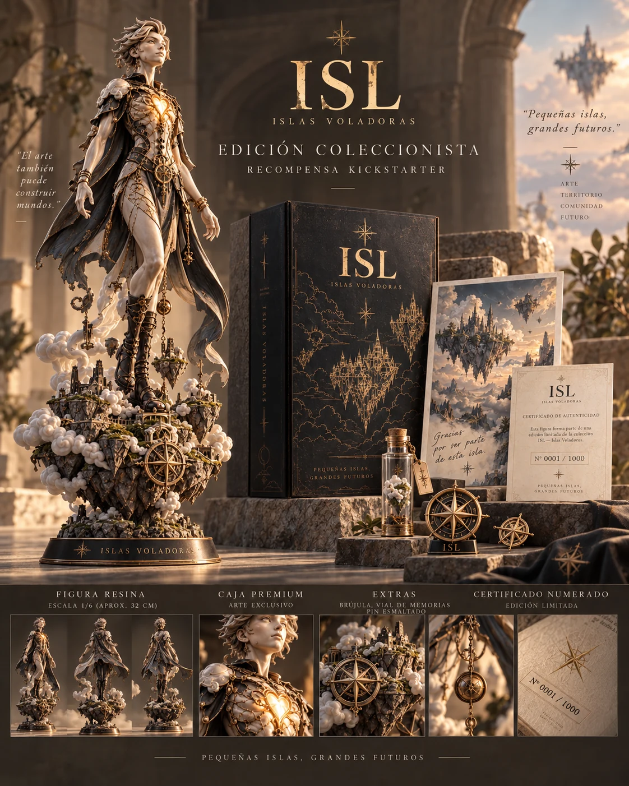

ISLAS VOLADORAS · COLLECTOR RELIC

PRIVATE PROOF · LAB ONLY · NO CANON
Pequeñas islas,
grandes futuros.
Hay mundos que empiezan como un juego. Otros empiezan dejando cosas encima de tu mesa.
COLLECTOR RELIC · PROTOTYPE FAMILY
No una caja más grande llena de cosas.
Una pieza central, una base de pequeñas islas, una caja, una carta, un objeto pequeño y una procedencia capaz de continuar. Esta familia sigue siendo concepto: no implica tirada, precio, fabricante ni producción autorizada.
SCULPTURAL PIECE
La isla como pedestal.
El objeto central no flota solo: parece haber arrancado un fragmento del mundo consigo.

DISTRIBUTED RELIC
Algo que sí puedes llevar.
La misma identidad traducida a hilo, sin convertir el mundo en merchandising genérico.

FOUND OBJECT
Una cosa pequeña con viaje encima.
Los objetos menores pueden tener más biografía que un “reward” grande.
RELIC 1/1
Una sola pieza.
No una escasez inventada.
Puede acumular marcas, reparaciones, fotos, manos, lugares y errores reales. No está en venta aquí. No tiene dueño asignado.
PROVENANCE CARD
Historia todavía incompleta.
ORIGINPENDING
CURRENT KEEPERNOT ASSIGNED
TRACESNONE YET
REPAIRS0
PLACESUNKNOWN
CANONNO AUTO-CANON
CONTRABANDO DE VIENTO
Algunas cosas llegan donde deberían.
Éstas no.
Un paquete puede traer una ficha, una nota, un parche, un sello, un fragmento de mapa o algo que parece pertenecer a otra persona. El error es narrativo; no es una compra aleatoria ni una loot box.
LA MÁQUINA QUE DA COSAS EQUIVOCADAS
Todavía no se ha equivocado contigo.Pulsa la máquina. El resultado se guarda sólo en este navegador.
3 PRIMEROS SELLOS · 1–3–∞
ADUANA DEL VIENTO · NO CONSTADESTINATARIO PROBABLEMENTE OTRODEVUÉLVELO CUANDO TE ACUERDES
CREW PASSPORT 01
No se estropea.
Se estropea contigo.
No fabricamos desgaste falso. Empieza limpio y termina pareciéndose a lo que hiciste: sellos, dobleces, notas, reparaciones y errores administrativos reales.
ESTADO · SIN VIAJES TODAVÍAERRORES HEREDADOS
Todavía no has heredado ninguno.
SMALL ISLANDS GRAMMAR
Un mundo abajo. Nunca un estampado.
Las pequeñas islas aparecen en bordes, pies de página, certificados y sellos sólo como susurro. Deben descubrirse al segundo vistazo.
OBJECTS RECOVERED SO FAR
Objetos, no catálogo.

CREW CAP 01
Objeto de tripulación.

DECK LIGHTER 01
Repararlo antes que reemplazarlo.
CREW PATCH 01
Pertenecer sin uniforme.
CAMPAIGN ROUTE · OBJECT BIOGRAPHY
El objeto no termina cuando lo recibes.
La campaña se comporta como una sola biografía: un error produce una huella, la huella entra en el pasaporte y algunas huellas reaparecen más tarde como procedencia de una reliquia.
01 · CONTRABANDO
Llega algo.
No siempre a quien debía.
02 · MÁQUINA
El error deja memoria.
La próxima visita puede devolverte una consecuencia, no sólo otro resultado.
03 · PASAPORTE
La huella se queda.
La pieza envejece con experiencias reales, no con desgaste falso.
04 · REENCUENTRO
Algo que parecía inútil vuelve a tener sentido.
Todavía no hay suficiente historia local para un reencuentro.
HUMAN GATE · LOCAL ONLY
¿Qué sigue vivo cuando cierras esta página?
Esta lectura es provisional, se guarda sólo en este navegador y no cambia CANON ni autoridad.
Sin decisión todavía.